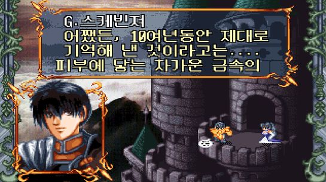

懲毖錄[Lv.10]
豫其懲而毖役患(미리 징계하여 후환을 경계한다)
-『시경(詩經)』 소비편(小毖篇)
조조도 인정한 정욱의 화법[임용한의 진짜 三國志_최종회]
조조모사 정욱의 성공비법[임용한의 진짜 三國志_31]
조조를 구한 순욱의 능력[임용한의 진짜 三國志_30]
순욱,원소에게 등을 돌리다 [임용한의 진짜 三國志_29] 순욱의 진짜 능력
조조의 모사 시리즈1[임용한의 진짜 三國志_28]곽가는 예언가다?
신삼국지TV시리즈 E23
신삼국지TV시리즈 E22
신삼국지TV시리즈 E21
신삼국지TV시리즈 E20
신삼국지TV시리즈 E19
신삼국지TV시리즈 E18
신삼국지TV시리즈 E17
신삼국지TV시리즈 E16
신삼국지TV시리즈 E15
신삼국지TV시리즈 E14
팩트체크-유비와 적로 이야기[임용한의 진짜 三國志_27]
해석을 못해도 깊은 뜻이 있는 것은 마음에 남는다.
유표와 유비의 어색한 만남[임용한의 진짜 三國志_26]유표의 딜레마
세계에서 5년 대통령단임제를 하는 딱 두나라, 지구 반대편 정치 선진국 우루과이 2부 [지구본연구소 시즌2 - EP.43]
강제격리 없이도 코로나19 방역에 선방한 나라가 있다? 우루과이 1부 [지구본연구소 시즌2 - EP.42]
신삼국지TV시리즈 E13
신삼국지TV시리즈 E12
신삼국지TV시리즈 E11
신삼국지TV시리즈 E10
신삼국지TV시리즈 E09
신삼국지TV시리즈 E08
신삼국지TV시리즈 E07
신삼국지TV시리즈 E06
유표의 몰락[임용한의 진짜 三國志_25]유표는 왜 바보같은 짓을 했을까?
유표는 통 큰 전략가다![임용한의 진짜 三國志_24] 유표의 재조명
신삼국지TV시리즈 E05
신삼국지TV시리즈 E04
신삼국지TV시리즈 E03
신삼국지TV시리즈 E02
신삼국지TV시리즈 E01
삼국지 2막의 시작[임용한의 진짜 三國志_23] 형주를 사수하라
이 쯤에서 꼭 다시봐야 할 관도대전 3편을 한번에...!![임용한의 진짜 三國志_번외편]
조조의 분노[임용한의 진짜 三國志_22]조조가 조조했다
눈치싸움은 끝났다.지금부터 본게임이 시작된다[임용한의 진짜 三國志_21]
조조와 유비의 치열한 눈치싸움[임용한의 진짜 三國志_20] 두 영웅의 위험한 동거
삼국지 최고의 풍운아[임용한의 진짜 三國志_19]여포의 마지막 불꽃
놈놈놈-시리즈2탄[임용한의 진짜 三國志_18]세 남자가 사는 법
여포가 유비의 부하였더라면?![임용한의 진짜 三國志_17]놈.놈.놈 시리즈1탄
유비에게 간손미란?[임용한의 진짜 三國志_16]아주 소중한 존재였다
유비는 착한 쪼다가 아니다[임용한의 진짜 三國志_15]유비도 계획이 있었다
모욕감 느끼고 시작한 유비[임용한의 진짜三國志_14]소설에는 절대 없는 이야기
영웅들의 본격적인 리턴매치가 시작된다![임용한의 진짜 三國志_13] 조조와여포의 맞짱승부
끝없는 논란,서주공방전. [임용한의 진짜 三國志_12]조조스러운 만행인가 전술적 선택인가. 그 진실은?
쓰리 킹덤의 본격 시작. 드디어! 조조가 조조하기 시작했다[임용한의 진짜 三國志_11]조조가 서주로 간 까닭은?
조조가 탐낸 원탑 영웅. 정사 삼국지 속의 '손책' [임용한의 진짜 三國志_10] 강동의 아이돌 소패왕. 오나라의 기틀을 세우다
무력 1진, 지략 1진, 야망 1진. 모든걸 가졌던 강동의 호랑이 손견. [임용한의 진짜 三國志_09] 관운장 급 활약과 사망의 미스테리
그것이 알고싶다. [황건적 장각과 태평도의 비밀] - 그들의 정체는?* [임용한의 진짜 三國志_08] 전 중국을 뒤흔든 [황건적의 난]과 도술의 도적 [장각]
백마장군의 처참한 최후[임용한의 진짜 三國志_07] 조조 성장의 밑거름이 되다
유비의 큰형님 백마의종 공손찬[임용한의 진짜 三國志_06]소설과 다른 치열했던 공손찬의 삶
조조가 아니다. 진짜는 따로있다. 관도대전 3부. 팩트체크[임용한의 진짜 三國志_05] 나관중 창작법 전격해부
조조. 패권의 중심을 잡다. 관도대전II-영화보다 재미있다☆[임용한의 진짜 三國志_ 04]
최대세력 원소 VS 최고두뇌 조조. 관도대전1. 영화보다 재미있다☆임용한의 진짜 삼국지 [三國志_ 03]
적과의 동행. 원소 vs 원술-영화보다 재미있다☆ '임용한의 진짜 삼국지'[三國志_02]아낌없이 주는 나무- 원소Ⅱ
거대전쟁의 서막. 세력의 탄생. 원소-영화보다 재미있다 ☆임용한의 진짜 삼국지[三國志_ 01]
[순삭밀톡]삼국지뒤집기★유비, 패왕인가? 성군인가? 유비패왕설의 진실
[순삭밀톡]삼국지뒤집기★완벽캐 제갈량이 뻥(?)캐릭터였다니!!
삼국지뒤집기16★나관중도 열폭시킨 사기캐 주유, 전격해부!(순삭밀톡)
[순삭밀톡] 삼국지뒤집기 ★ 육손 뒷담화 몰아보기
[순삭밀톡] 삼국지뒤집기 ★ 적벽대전 몰아보기
[순삭밀톡] 삼국지뒤집기 ★ 장비 몰아보기
[순삭밀톡] 삼국지뒤집기 ★ 황충 뒷담화 몰아보기
[순삭밀톡] 삼국지뒤집기★ 유비 뒷담화 몰아보기
삼국지뒤집기18★임용한박사를 겁나게 한 하후돈!(순삭밀톡)
삼국지뒤집기17★입구는 있어도 출구는 없음, 입덕하면 출구 없다는 조자룡의 묵직한 마성 비결(순삭밀톡)
[순삭밀톡]삼국지뒤집기★조조 뒷담화 몰아보기
막장이었던 임진왜란 70년 전 명나라 [중국의 역사]
[독일 역사 요약] (NEW)외유내강의 나라! 독일 역사 15분 총정리
9번째 위기를 맞은 프로 부도국, 파산의 역사! 아르헨티나 6부 최종화 [지구본연구소 시즌2 - EP.41]
정사 삼국지 총정리
삼국지보다 재미있는 정사 초한지
소련이 초강대국이 된 진짜 이유!!
왜 쿠릴 열도는 전부 다 러시아 땅이 된 걸까??
드디어 전쟁의 막이 오르다! 2개월 간의 포클랜드를 둘러싼 다툼, 아르헨티나 5부 [지구본연구소 시즌2 - EP.40]
제국의 역습 : 포클랜드 전쟁의 서막, 아르헨티나 4부 [지구본연구소 시즌2 - EP.39]
군부독재가 남긴 참혹한 역사 '더러운 전쟁', 아르헨티나 3부 [지구본연구소 시즌2 - EP.38]
왜 그들은 가난해 질 수 밖에 없었을까? 아르헨티나 2부 [지구본연구소 시즌2 - EP.37]
선진국에서 후진국으로? 대표적 백인국가, 아르헨티나 1부 [지구본연구소 시즌2 - EP.36]
발해가 우리 역사인 근거
몽골제국의 유럽 침공(2) 러시아 정벌 [몽골의 역사]
몽골제국의 유럽 침공(1) 유럽 침공의 서막(칼가 강 전투) [몽골의 역사]
한나라의 흉노 정벌기(1) : 천하를 통일한 유방, 그러나
[북유럽 신화] #6 격돌! 토르 vs 요르문간드
[북유럽 신화] #5 토르의 패배 & 악연의 시작
[북유럽 신화] #4 여자가 된 토르 | 그재무지 시리즈
[북유럽 신화] #3 묠니르의 탄생 & 로키의 세 아이 | 그재무지 시리즈
[북유럽 신화] #2 성벽 쌓는 거인과 로키 | 그재무지 시리즈
[북유럽 신화] #1 천지창조 & 신들의 전쟁 | 그재무지 시리즈
[이집트 신화] #최종화 | 그재무지 시리즈
[이집트 신화] #6 통수의 통수의 통수! | 그재무지 시리즈
[이집트 신화] #5 ♥♥ 세트 ♥ 호루스 ♥♥ | 그재무지 시리즈
[이집트 신화] #4 세트 vs 호루스, 왕권 재판 | 그재무지 시리즈
[조선왕조실록] 10분순삭 조선이야기 l 최고령임금 '1대 태조' & 처세술의 신 '2대 정종'
[5000 years of Chinese history] History of China in 10 Minutes
[영국 역사 요약] 👑영국 역사 꿀잼 10분 총정리(NEW) l 고대,중세,현대
[인도 역사 요약] 수학과 수행자의 나라, 인도 역사 15분 꿀잼 총정리(NEW) l 고대~현대
황제 유방과 국사무쌍 한신
3만으로 56만 대군을 궤멸시킨 전투, 항우의 팽성 대전